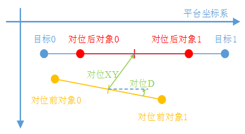
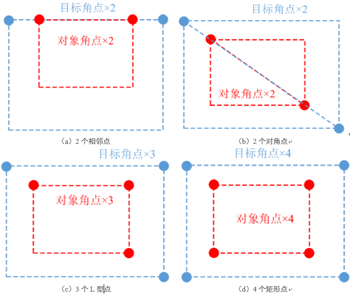
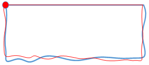
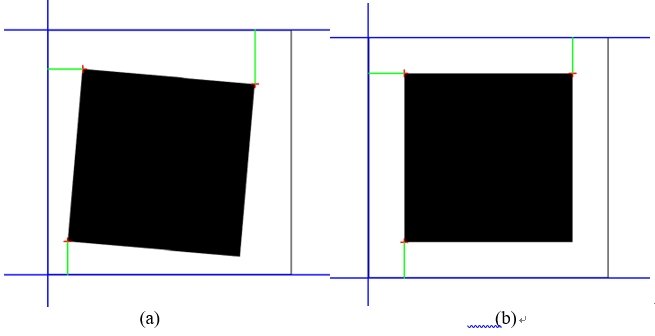
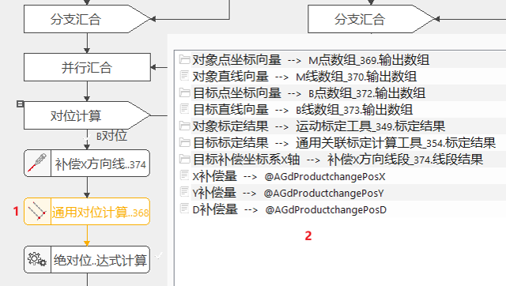
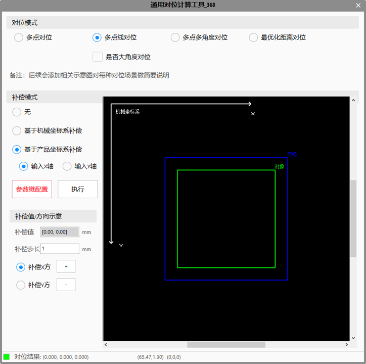

对位是指，在统一的平台坐标系下，根据对象和目标的多个特征，计算机械手偏移量，使得对象和目标对准重合。最常见的两点对位，如下图所示。

在多点对位计算中，根据采样数量和位置分布的不同，常见有如下四种具体场景，即2个相邻点、2个对角点、3个L型点、4个矩形点，分别如下图（a）、（b）、（c）、（d）所示。

多点多角度对位计算工具就是在已知对象点坐标向量与目标点坐标向量，并给定了旋转角度向量的前提下，计算多点间的对位偏移量。

多点线对位计算工具就是用于在已知对象的点和线，目标的点和线的情况下，计算多点线间的对位偏移量。
与其他对象目标对位计算工具直接给定目标位置不同，最优化距离对位计算工具依据给定的数个点与数条直线，通过最优化点与对应直线的距离来计算目标位置，使得最终对位后的点到直线距离与给定的标准距离最为近似。如下图(a)所示，绿色线条代表三个平台点分别到对应直线的距离，当设定标准距离（这里以标准距离一致为例）后，对位后的结果如下图（b）。

在常见的Pick & Place应用中，均可使用此工具计算目标和对象的偏移量，该工具支持四种对位模式，即多点对位、多点线对位、多点多角度对位、最优化距离对位，这4种对位方式对应的典型应用场景分别如下描述，可以根据不同的应用场景选择所需的对位模式：
多点对位：已知目标和对象上的N个点（N >= 2）。在实际项目中，一般单相机对位（即目标和对象均只有一个相机）时，对象和目标的Mark点均是由直线交点、中点、圆心等特征组成的，在这一场景下，当对象和目标上均只存在圆形特征时，往往使用多点对位，即组成我们Mark点的特征中不包含直线。而在多相机对位（即目标和对象均由多个相机采集）时，我们会更多的使用多点对位，因为此时通过标定结果，多个相机下的Mark点很容易转换到平台坐标系下，而转换直线则没有那么简单，所以多相机对位更多的会使用多点对位。
多点线对位：已知目标和对象上的N个点和M条线（N >= 1, M >= 1）。在常规的单相机对位（即目标和对象均只有一个相机）场景下，我们一般会使用这一模式，即产品的Mark点是由多条直线组合得到的（如直线交点 + 中点等），而组成Mark点的直线则可以作为对位过程中的直线。
多点多角度对位：已知目标和对象上的N个点，并且已知对象到目标需要旋转的M个角度（N >= 1, M >= 1）。这个模式最典型的应用场景反而是不需要旋转角度，如圆心对圆心的应用。因为前面多点对位模式要求至少两个点，而多点线在对位时，即使我们将对象和目标均输入一条自己生成的0°的直线，但是由于两个相机直线会存在夹角，所以仍然得到的结果仍然会存在旋转。而当我们使用多点多角度对位，且将输入的角度置为0时，就可以实现单点对单点的对位方式。
最优化距离对位：
模式1：已知对象上的N个点、目标上的N个直线以及N个标准距离，使得最终对位后的对象点到目标直线距离与给定的标准距离最为近似（N >= 3）；
模式2：已知对象左侧M个点，目标左侧M个直线，对象右侧M个点，目标右侧M个直线，使得最终对位后左侧对象点到左侧目标直线的距离与右侧对象点到右侧目标直线的距离最为接近（M >= 3）
模式3：混用模式1与模式2，要求N + M >= 3。
最优化距离对位的应用场景也比较容易分辨，比如当用户要求我们最终贴合后的对象和目标在某几个方向有标准距离，但是对贴合后的角度不那么关心时，往往会使用这种对位方式。
总结来说，当我们在对位过程中对象和目标上均不存在直线时（如N圆对N圆），我们会选择多点对位；而大多数场景下均使用多点线对位，因为我们的产品往往存在一定的形状，而这些形状均是由点、线、圆组成的，所以比较容易找到对应的点和线；多点多角度对位则常常被用在单圆对单圆的场景下，因为此模式下最终指导机构旋转的角度就是我们输入的角度；最优化距离对位则用在我们需要同时量测多个边缘之间距离，而对边缘角度不是很关心的场景下。
在完成相机标定后，可以根据标定结果计算出图像中任意一点在机械坐标系下的坐标值，由此，当目标和对象需要进行对位计算时，分别由两个相机采集目标和对象的图像，并计算待重合点的机械坐标值，从而计算出运动机构需要移动的偏移量。


对位模式
如前文所述，根据不同的应用场景，选择相应的对位模式，在修改对位模式的同时，参数链会根据不同的对位模式做出相应的调整。
补偿模式
用户可以根据实际的使用需求选择不同的补偿类型，参数链会在用户选择使用补偿时增加相关的链接，供用户链接相关的变量，下面对不同的补偿类型进行详细的说明，如下描述：
1）无：不进行补偿
2）基于机械坐标系补偿：7补偿的X/Y/D方向沿机械坐标系的正方向，以X轴为例，当补偿1mm时，运动机构会在当前的对位计算结果上沿机械手的X正方向补偿1mm。
3）基于产品坐标系补偿：如上图所示的红色坐标系，产品坐标系的角度是由用户链接的X或Y轴直线确定的，其方向可通过交互的方式进行修改（点击某个坐标轴时，其方向会进行翻转）。确定好产品坐标系后，补偿的X/Y正方向和产品坐标系的正方向一直，使用产品坐标系补偿时，D轴正方向总是顺时针。以X轴为例，当补偿1mm时，由于产品坐标系和机械坐标系的方向不一致，运动机构会在当前对位计算结果上沿机械手方向补偿（0.7mm, 0.18mm ： 此值仅为示例）
补偿值/方向示意
此功能和对位工具的补偿值无关，仅供用户操作以观察右侧图像对象的移动方向，从而直观的看到不同补偿类型、不同产品坐标系方向下对象的移动方向。对位计算的最终补偿值是由参数链中的链接决定的。
| 参数名称（属性栏） | 参数说明 |
|---|---|
| 平台类型 | 根据应用场景，选择进行XYD平台还是UVW平台进行对位 |
| 对位计算结果X上限 | 设定对位结果X上限，默认为“——”不判定，可设置的判定区间为(-1000000, 1000000)且大于下限，当对位计算结果X的实际值大于上限时执行结果为失败。 |
| 对位计算结果X下限 | 设定对位结果X下限，默认为“——”不判定，可设置的判定区间为(-1000000, 1000000)且小于上限，当对位计算结果X的实际值小于下限时执行结果为失败。 |
| 对位计算结果Y上限 | 设定对位结果Y上限，默认为“——”不判定，可设置的判定区间为(-1000000, 1000000)且大于下限，当对位计算结果Y的实际值大于上限时执行结果为失败。 |
| 对位计算结果Y下限 | 设定对位结果Y下限，默认为“——”不判定，可设置的判定区间为(-1000000, 1000000)且小于上限，当对位计算结果Y的实际值小于下限时执行结果为失败。 |
| 对位计算结果D上限 | 设定对位结果D上限，默认为“——”不判定，可设置的判定区间为(-1000000, 1000000)且大于下限，当对位计算结果D的实际值大于上限时执行结果为失败。 |
| 对位计算结果D下限 | 设定对位结果D下限，默认为“——”不判定，可设置的判定区间为(-1000000, 1000000)且小于上限，当对位计算结果D的实际值小于下限时执行结果为失败。 |
| 参数名称（参数链：多点/多点线/多点多角度） | 参数说明 |
|---|---|
| 对象点坐标向量 | 链接对象的特征点数组 |
| 对象直线向量 | 链接对象的特征直线数组 |
| 目标点坐标向量 | 链接目标的特征点数组 |
| 目标直线向量 | 链接目标的特征直线数组 |
| 旋转角度向量 | 链接对象到目标需要旋转的角度数组 |
| 对象标定结果 | 链接负责采集对象图像的相机标定结果 |
| 目标标定结果 | 链接负责采集目标图像的相机标定结果 |
| 参数名称（参数链：最优化距离对位） | 参数说明 |
|---|---|
| 距离对位对象点坐标向量 | 链接对象的特征点数组 |
| 距离对位目标直线向量 | 链接对象的特征直线数组 |
| 标准距离向量 | 链接对象点到目标直线的标准距离数组 |
| 居中对位对象点坐标向量1 | 链接对象的特征点数组1 |
| 居中对位目标直线向量1 | 链接对象的特征直线数组1 |
| 居中对位对象点坐标向量2 | 链接对象的特征点数组2 |
| 居中对位目标直线向量2 | 链接对象的特征直线数组2 |
| 对象标定结果 | 链接负责采集对象图像的相机标定结果 |
| 目标标定结果 | 链接负责采集目标图像的相机标定结果 |
| 参数名称（参数链：补偿值） | 参数说明 |
|---|---|
| 目标补偿坐标系X轴 | 构建补偿坐标系时，使用输入的值构建X轴，然后内部构建和此直线垂直的直线作为Y轴 |
| X补偿量 | 输出的对位计算结果在X方向需要增加的补偿量 |
| Y补偿量 | 输出的对位计算结果在Y方向需要增加的补偿量 |
| D补偿量 | 输出的对位计算结果在D方向需要增加的补偿量 |
| 参数名称 | 参数说明 |
|---|---|
| 对位计算结果X | 输出的运动机构的相对偏移量X |
| 对位计算结果Y | 输出的运动机构的相对偏移量Y |
| 对位计算结果D | 输出的运动机构的相对偏移量D |
| 对象平台坐标 | 根据输入的对象图像坐标和对象标定结果，计算对象的平台坐标 |
| 目标平台坐标 | 根据输入的目标图像坐标和目标标定结果，计算目标的平台坐标 |
| 对象平台角度 | 根据输入的对象图像坐标/图像直线和对象标定结果，计算对象的平台角度 |
| 目标平台角度 | 根据输入的目标图像坐标/图像直线和目标标定结果，计算目标的平台角度 |
参见“\Samples\应用案例\对位类项目\Mesh贴Box项目\Mesh贴Box工程.gvp” 及其说明文档“应用案例\对位类项目\Mesh贴Box项目”。